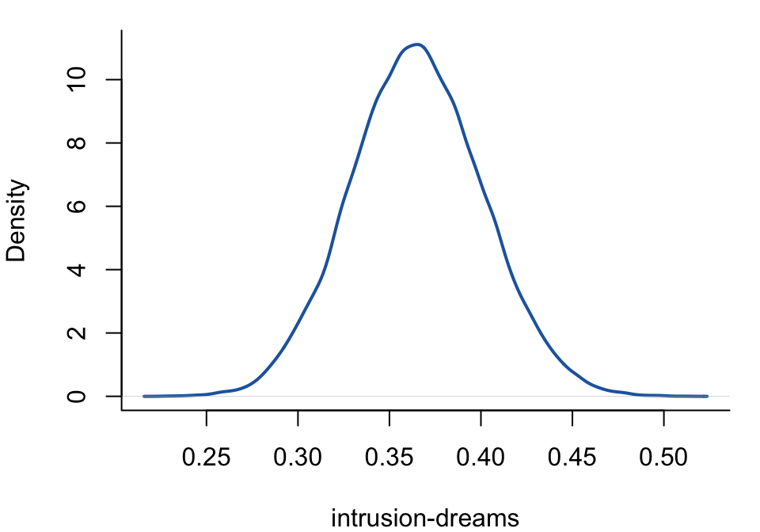

bgms uses Markov chain Monte Carlo (MCMC) to sample from the posterior distribution of the model parameters. The output of bgm() and bgmCompare() contains posterior summaries computed from these samples, posterior mean matrices, the raw MCMC draws themselves, and sampler diagnostics. This chapter describes how to access and interpret each of these components. For diagnostics related to the sampler itself, see MCMC Diagnostics. For a walkthrough of a real output, block by block on a fitted model, see Reading the output.
The examples use a fit to the Wenchuan earthquake data (17 ordinal PTSD items):
library(bgms)fit =bgm(Wenchuan, iter =1e4, warmup =5e3, seed =123)
The fit object
bgm() returns an S7 object of class bgms (class(fit) reports "bgms" and "S7_object"). Its components are reached with $, as below.
The two primary interfaces are summary() for tabular diagnostics and coef() for posterior means in matrix form. Raw samples are available in fit$raw_samples for custom analyses.
Some components are present only for particular configurations: fit$inclusion_parameter_samples holds per-chain draws of the shared inclusion probability for continuous models with beta_bernoulli_prior() (see Gaussian Graphical Model), and fit$zratio_diag holds the trust-gauge summary, which a continuous or mixed fit with edge selection produces by default under precision_graph_prior = "hierarchical" (see MCMC Diagnostics); both are NULL otherwise, as they are on this ordinal fit.
Posterior summaries
Calling summary() prints formatted tables of posterior statistics.
summary(fit)
Posterior summaries from Bayesian estimation:
Category thresholds:
mean mcse sd n_eff Rhat
intrusion (2) 0.445 0.002 0.249 12914.547 1.001
intrusion (3) -2.075 0.005 0.389 6574.586 1.001
intrusion (4) -5.356 0.009 0.657 5515.388 1.001
intrusion (5) -10.496 0.014 1.040 5784.383 1.001
dreams (2) -0.817 0.002 0.212 10813.006 1.000
dreams (3) -4.386 0.005 0.416 6887.781 1.000
... (use `summary(fit)$main` to see full output)
Pairwise interactions:
mean mcse sd n_eff share_incl Rhat
intrusion-dreams 0.365 0.000 0.036 22742.840 0.000 1.000
intrusion-flash 0.173 0.000 0.035 16205.811 0.000 1.000
intrusion-upset 0.062 0.001 0.052 1751.586 0.928 1.005
intrusion-physior 0.014 0.001 0.031 3481.262 0.954 1.001
intrusion-avoidth -0.001 0.000 0.006 45609.250 0.162 1.000
intrusion-avoidact 0.000 0.000 0.005 38820.463 0.011 1.000
... (use `summary(fit)$pairwise` to see full output)
Inclusion probabilities:
mean mcse sd n_eff Rhat n0->1 n1->0
intrusion-dreams 1.000 0.000 0 0
intrusion-flash 1.000 0 0.001 39460.069 1 0 0
intrusion-upset 0.664 0.013 0.460 1300.913 1.005 659 660
intrusion-physior 0.217 0.008 0.388 2477.845 1.001 1090 1090
intrusion-avoidth 0.034 0.001 0.109 21794.876 1 1018 1018
intrusion-avoidact 0.029 0.001 0.094 23071.446 1 913 913
... (use `summary(fit)$indicator` to see full output)
Note: NA values are suppressed in the print table; they occur for indicators
that were not updated or whose draws are constant, so ESS/Rhat are undefined.
`summary(fit)$indicator` still contains all computed values.
Use `summary(fit)$<component>` to access full results.
Use `extract_log_odds(fit)` for log odds ratios.
See the `easybgm` package for other summary and plotting tools.
Which tables appear
The summary produces a set of tables depending on the model type. Each row is a parameter; each column is a posterior summary statistic. The tables that appear depend on which model was fitted:
Table
OMRF
GGM
Mixed MRF
Category thresholds
yes
—
yes (discrete block)
Continuous means
—
—
yes (continuous block)
Residual variances
—
yes
yes (continuous block)
Pairwise interactions
yes
yes
yes
Inclusion indicators
if edge selection
if edge selection
if edge selection
Category thresholds report the posterior estimates of the ordinal threshold parameters. These define the boundary between adjacent response categories on the log-odds scale. Negative values indicate that higher categories are less probable.
Residual variances report the posterior estimates of the residual variance \(1 / \Theta_{ii}\) for each continuous variable, where \(\Theta_{ii}\) is the corresponding diagonal element of the precision matrix (see Gaussian Graphical Model). Use extract_precision() to obtain the full precision matrix.
Pairwise interactions report the conditional association between each pair of variables, controlling for all others. These are the edge weights in the graphical model. A value of zero means the two variables are conditionally independent. For mixed models, these span three blocks: discrete–discrete, continuous–continuous, and cross-type edges. Use extract_partial_correlations() for standardized partial correlations (continuous variables) and extract_log_odds() for log-odds ratios (discrete variables).
Inclusion indicators report the posterior inclusion probability of each edge — estimated, by default, from the Rao-Blackwellized inclusion draws rather than the raw 0/1 indicators, which gives the same quantity with less Monte Carlo noise. An inclusion probability near 1 indicates strong evidence for the edge; near 0 indicates strong evidence against it. Values around 0.5 are inconclusive. The directional transition counts (n0->1, n1->0) show how often the edge indicator switched between excluded (0) and included (1) states during sampling; they show how much the sampler explored. Read them beside n_eff, which measures precision conditional on that exploration; see MCMC Diagnostics. The Rao-Blackwellized precision columns (mcse, n_eff, Rhat) come back NA when the chain is so certain about an edge that there is nothing left to estimate, rather than reporting the reassuring-looking numbers a near-constant chain would otherwise produce. extract_ess() returns the same Rao-Blackwellized n_eff for indicators.
Summary columns
Column
Meaning
mean
Posterior mean of the parameter. For inclusion indicators, the Rao-Blackwellized inclusion probability.
sd
Posterior standard deviation — the width of the posterior.
mcse
Monte Carlo standard error — how precisely the posterior mean is estimated. A small MCSE relative to sd indicates sufficient sampling. See MCMC Diagnostics.
n_eff
Effective sample size — the number of independent draws the chain is equivalent to. Values below 100 warrant longer runs. See MCMC Diagnostics.
share_incl
Tables of parameters under selection only (pairwise for bgm(); main_diff and pairwise_diff for bgmCompare()). The share of the squared Monte Carlo error of the model-averaged parameter that comes from inclusion uncertainty rather than from the slab. Values near 1 mean the bottleneck is how well the chain resolved whether the parameter is in; values near 0 mean it is how well the chain resolved the effect size given inclusion.
n0->1, n1->0
Inclusion table only. Directional counts of indicator transitions; they show how much the sampler moved between structures. See MCMC Diagnostics.
Rhat
Split \(\hat{R}\) convergence diagnostic. Values above 1.01 suggest the chains have not mixed. See MCMC Diagnostics.
In the pairwise table for an edge-selected fit, mcse and n_eff are the composite quantities for the model-averaged edge weight: the weight mixes an exact zero with a slab value, so its Monte Carlo error combines an inclusion part and a slab part, and n_eff is the posterior variance divided by that composite squared error rather than a raw-chain ESS.
Accessing specific tables
The printed output is truncated. Access the full tables with:
The coef() method returns posterior means in matrix form — convenient for network visualization and downstream analysis.
str(coef(fit), max.level =1)
List of 3
$ main : num [1:17, 1:4] 0.4451 -0.8171 -0.3825 0.0581 -0.7021 ...
..- attr(*, "dimnames")=List of 2
$ pairwise : num [1:17, 1:17] 0 0.365 0.1729 0.0622 0.0142 ...
..- attr(*, "dimnames")=List of 2
$ indicator: num [1:17, 1:17] 0 1 1 0.664 0.217 ...
..- attr(*, "dimnames")=List of 2
coef(fit)$pairwise is a symmetric \(p \times p\) matrix of posterior mean partial associations (zero diagonal). For interpretable scales, use extract_precision(), extract_partial_correlations(), or extract_log_odds(). coef(fit)$indicator is a symmetric \(p \times p\) matrix of posterior inclusion probabilities.
For ordinal models, coef(fit)$main is a matrix with variables in rows and category thresholds in columns:
For custom analyses — posterior intervals, density plots, or derived quantities — the raw posterior draws are stored in fit$raw_samples:
str(fit$raw_samples, max.level =1)
List of 9
$ main :List of 4
$ pairwise :List of 4
$ indicator :List of 4
$ rb_inclusion :List of 4
$ rb_counts :List of 4
$ allocations : NULL
$ nchains : int 4
$ niter : int 10000
$ parameter_names:List of 4
Each element is a list of matrices, one per chain, with rows = iterations and columns = parameters. The chains are stored separately to allow per-chain diagnostics.
With edge selection, fit$raw_samples$rb_inclusion additionally holds the Rao-Blackwellized inclusion draws: for each edge and iteration, the conditional probability that the edge ends the sweep included, given the rest of the state. Averaging these gives a lower-variance estimate of the inclusion probability than averaging the binary indicators — it is the default estimator behind summary() and extract_posterior_inclusion_probabilities().
Example: posterior density for an edge
To extract the posterior samples for the intrusion-dreams interaction and compute a 95% credible interval:
# Combine chains for one parameteredge ="intrusion-dreams"col_idx =which(fit$raw_samples$parameter_names$pairwise == edge)samples =unlist(lapply(fit$raw_samples$pairwise, function(ch) ch[, col_idx]))cat("Posterior mean:", round(mean(samples), 3), "\n")
par(mar =c(4, 4, 1, 1))plot(density(samples), main ="", xlab ="intrusion-dreams",ylab ="Density", bty ="L", lwd =2, col ="#2166AC")abline(v =0, lty =2, col ="grey50")

Extracting specific results
The extract_*() family of functions provides targeted access to model components. These are documented in the Extractor Functions reference. The most commonly used are:
Function
Returns
extract_pairwise_interactions()
Raw partial association samples
extract_main_effects()
Raw main effect samples
extract_indicators()
Raw indicator samples
extract_posterior_inclusion_probabilities()
Posterior inclusion probabilities
extract_prior_inclusion_probabilities()
Effective prior inclusion probabilities — the denominators for inclusion Bayes factors on continuous data (see Edge Selection)
extract_inclusion_bf()
Inclusion Bayes factors, computed from Rao-Blackwellized odds accumulators, so they stay finite where edges whose inclusion probability saturates at 0 or 1 would overflow the posterior-odds transformation — up to the numerical bound, beyond which the value is still Inf. log = TRUE returns their natural logarithms
extract_precision()
Posterior mean precision matrix (GGM / continuous block)
extract_partial_correlations()
Posterior mean partial correlation matrix (GGM / continuous block)
extract_log_odds()
Posterior mean log-odds matrix (ordinal / discrete block)
extract_ess()
Effective sample sizes. For edge indicators, the Rao-Blackwellized ESS
extract_rhat()
Split \(\hat{R}\) values
extract_sbm()
SBM cluster assignments and co-clustering matrix (when edge_prior = sbm_prior(...))
extract_arguments()
Arguments used when fitting the model
NUTS diagnostics
When update_method = "nuts" (the default), additional diagnostics are stored in fit$nuts_diag:
str(fit$nuts_diag, max.level =1)
List of 8
$ treedepth : int [1:4, 1:10000] 6 5 5 6 6 5 5 7 5 5 ...
$ divergent : int [1:4, 1:10000] 0 0 0 0 0 0 0 0 0 0 ...
$ energy : num [1:4, 1:10000] 6621 6615 6611 6610 6614 ...
$ accept_prob : num [1:4, 1:10000] 0.857 0.625 0.963 0.959 0.903 ...
$ ebfmi : num [1:4] 0.895 0.907 0.89 0.932
$ warmup_check:List of 6
$ has_issues : logi TRUE
$ summary :List of 5
The summary field aggregates the headline numbers — total divergences, maximum-tree-depth hits, the minimum E-BFMI across chains, the mean acceptance probability, and whether any chain’s warmup looked incomplete. The per-iteration detail behind them is stored alongside: tree depths, divergence flags, energies, and acceptance probabilities (fit$nuts_diag$accept_prob), plus the per-chain warmup_check diagnostics. The has_issues flag is TRUE when any check raised a concern. These are described in detail in MCMC Diagnostics. If these diagnostics remain problematic after tuning, refit with update_method = "adaptive-metropolis".
bgmCompare() returns an S7 object of class bgmCompare with the same structure as bgm(), plus additional components for group differences. The examples use the ADHD data (18 binary items, two groups):
Posterior summaries from Bayesian grouped MRF estimation (bgmCompare):
groups: 1 = 0 (n = 209), 2 = 1 (n = 146)
Category thresholds:
parameter mean mcse sd n_eff Rhat
1 avoid (1) -3.751 0.005 0.562 11855.45 1
2 closeatt (1) -3.099 0.004 0.499 13397.86 1
3 distract (1) -2.468 0.005 0.462 10545.78 1
4 forget (1) -2.528 0.004 0.440 14639.71 1
5 instruct (1) -3.821 0.005 0.558 13726.72 1
6 listen (1) -2.267 0.004 0.457 11981.31 1
... (use `summary(fit)$main` to see full output)
Pairwise interactions:
parameter mean mcse sd n_eff Rhat
1 avoid-closeatt 0.592 0.004 0.247 3912.005 1
2 avoid-distract 0.971 0.002 0.194 15082.191 1
3 avoid-forget 0.401 0.003 0.207 5802.918 1
4 avoid-instruct 0.536 0.003 0.241 7742.765 1
5 avoid-listen -0.061 0.002 0.246 9816.732 1
6 avoid-loses 0.126 0.002 0.206 10426.572 1
... (use `summary(fit)$pairwise` to see full output)
Inclusion probabilities:
parameter mean mcse sd n_eff Rhat n0->1 n1->0
avoid (main) 0 0
avoid-closeatt (pairwise) 0.861 0.008 0.312 1573.518 1.003 342 341
avoid-distract (pairwise) 0.353 0.005 0.37 6604.088 1 1538 1538
avoid-forget (pairwise) 0.809 0.008 0.351 1964.199 1.001 501 502
avoid-instruct (pairwise) 0.97 0.003 0.151 2500.687 1.002 100 100
avoid-listen (pairwise) 0.823 0.008 0.344 1853.866 1.002 461 460
... (use `summary(fit)$indicator` to see full output)
Note: NA values are suppressed in the print table; they occur for indicators
that were not updated or whose draws are constant, so ESS/Rhat are undefined.
`summary(fit)$indicator` still contains all computed values.
Group differences (main effects):
parameter mean mcse sd n_eff share_incl Rhat
avoid (diff1; 1) 1.023 0.008 0.780 9778.027 0 1
closeatt (diff1; 1) 1.614 0.007 0.720 11347.286 0 1
distract (diff1; 1) 0.316 0.008 0.772 8553.696 0 1
forget (diff1; 1) 1.561 0.007 0.660 9257.068 0 1
instruct (diff1; 1) 1.069 0.008 0.779 9292.954 0 1
listen (diff1; 1) 1.821 0.008 0.750 8083.348 0 1
... (use `summary(fit)$main_diff` to see full output)
Group differences (pairwise effects):
parameter mean mcse sd n_eff share_incl Rhat
avoid-closeatt (diff1) -0.852 0.009 0.520 3590.634 0.806 1.001
avoid-distract (diff1) -0.118 0.003 0.265 11152.842 0.369 1.000
avoid-forget (diff1) -0.646 0.007 0.453 4324.164 0.847 1.001
avoid-instruct (diff1) 1.223 0.006 0.492 7247.341 0.433 1.000
avoid-listen (diff1) 0.798 0.009 0.550 4047.721 0.804 1.001
avoid-loses (diff1) -0.239 0.004 0.372 7755.712 0.652 1.000
... (use `summary(fit)$pairwise_diff` to see full output)
Use `summary(fit)$<component>` to access full results.
See the `easybgm` package for other summary and plotting tools.
The summary includes two additional tables beyond what bgm() produces:
Group differences (main effects) — posterior estimates of how category thresholds differ between the two groups. Large positive or negative values indicate that a symptom’s baseline severity differs across groups.
Group differences (pairwise effects) — posterior estimates of how edge weights differ between the two groups. These quantify whether the conditional association between two symptoms is stronger or weaker in one group relative to the other.
When difference_selection = TRUE (the default), the inclusion indicators for these difference parameters are reported alongside the common-structure indicators. An inclusion probability near 1 for a difference parameter indicates strong evidence that the groups differ on that effect.